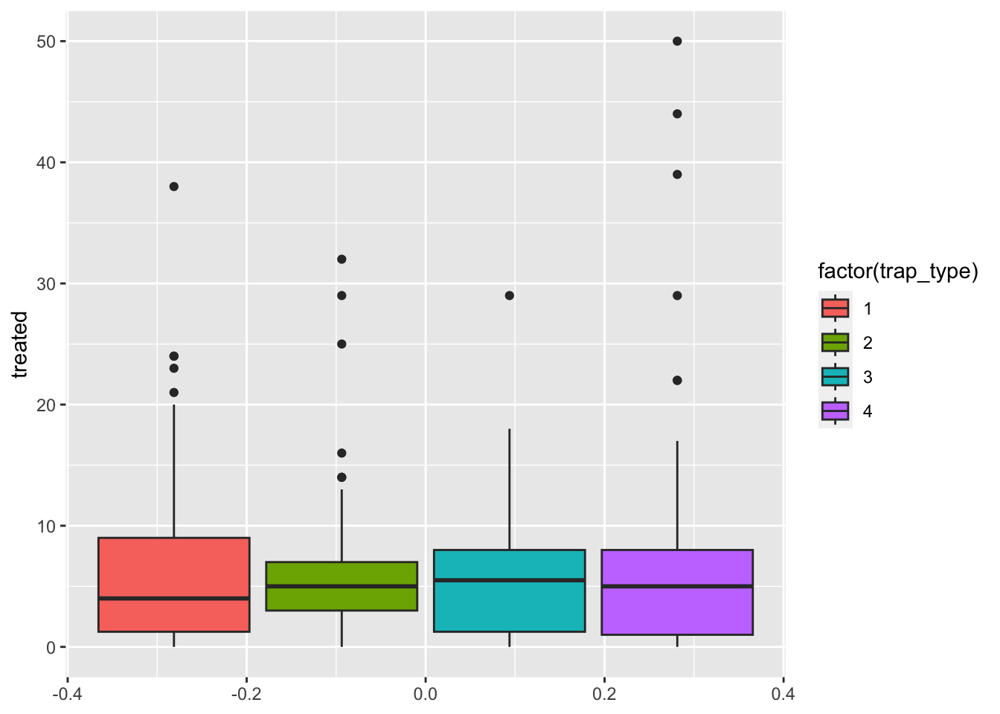
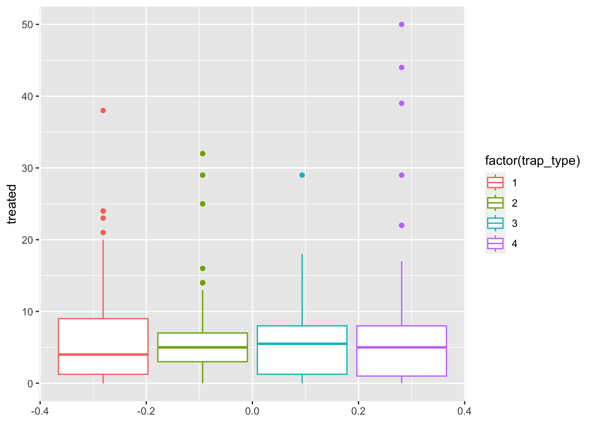
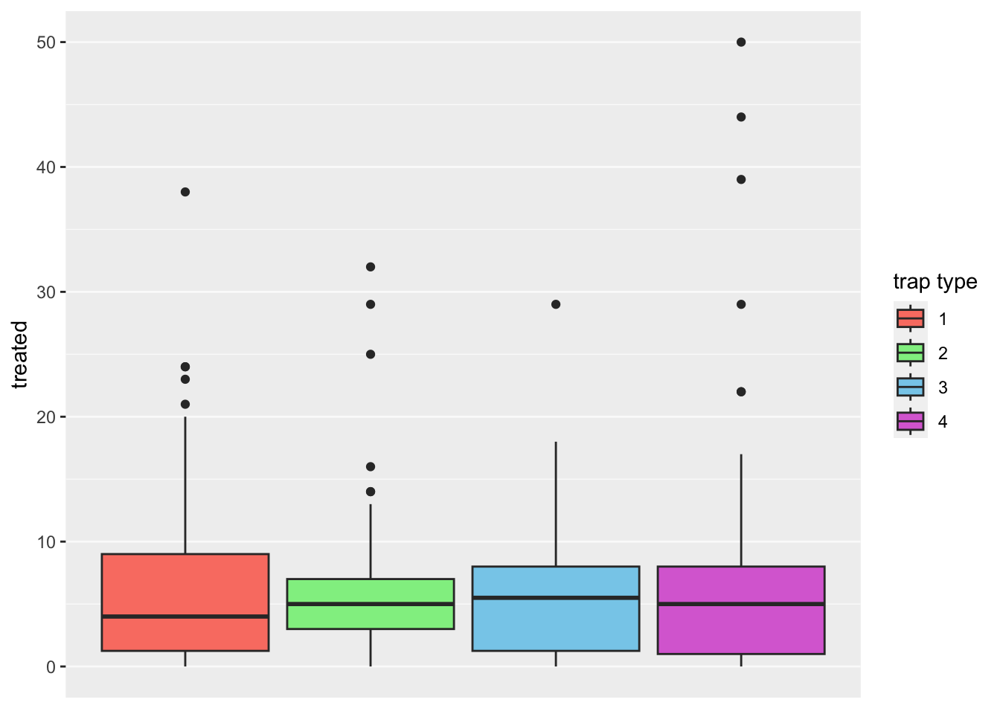

Further customization
Pablo Gomez
2023-06-08
1 Further customization
1.1 Labels
Usually we try to avoid spaces when using names for the column names, but for our plots this could be not the most straight forward way to communicate our analysis, we can set specific labels to make our plots more readable and self explanatory. Let’s improve bar plot figure a bit more to make it clearer:
figures$bars <- captures %>%
count(year, wt = treated) %>%
ggplot() +
geom_bar(aes(x = year, y = n), stat = 'identity') + # type of barplot
labs(# We will use the function labs to generate our labels
title = 'Number of treated by year',
x = 'Year',
y = 'Number of treated'
)
figures$bars
1.2 Themes
ggplot includes the function theme() to define most of
the aspects of the figure such as the background color, the grid, axes,
legend, among many others. There is also several predefined themes (all
start with theme_ followed by the name of the theme) that
you can use, if don’t want to mess with all the arguments from the
function theme(). For example:
# all the predefined themes start with theme_
figures$timeseries <- tCaptures %>%
ggplot() +
geom_line(aes(x = week, y = n)) +
labs(title = 'Treated by week', x = 'Week', y = 'Number of treated') +
theme_minimal() # We will use the theme minimal
figures$timeseries
1.3 Other aesthetics
1.3.1 Shape
There are other aesthetics we can define such as color, type of point, size, among many others. Lets try changing the point shape for one of the plots we previously did:
figures$scatter <- captures %>% # the data we are using
ggplot() + # we set the canvas
geom_point(aes(
x = captures, # X axis
y = treated, # Y axis
shape = factor(trap_type) # point shape
)) +
labs(title = 'Captures and treatments by year', x = 'Captures', y = 'Treated', shape = 'Trap type') +
theme_classic() # now lets try the theme 'classic'
figures$scatter
1.3.2 Color
In the next example we will use the trap type to color our boxplot:
captures %>%
ggplot() + # set the canvas
geom_boxplot(aes(y = treated, fill = factor(trap_type))) # we add a boxplot layer
We can also use the variable to color other parts of the plot such as the border:
captures %>%
ggplot() + # set the canvas
geom_boxplot(aes(y = treated, col = factor(trap_type))) # we add a boxplot layer
1.3.3 Non aesthetics customization
So far we have added variables inside our aes()
function, but we can add some arguments outside the aes()
function that we want them to be applied for all observations. For
example, we can change the outline of the boxplot to be the same for the
two groups, but the fill color different per group:
captures %>%
ggplot() + # set the canvas
geom_boxplot(
aes(y = treated, fill = factor(trap_type)), # This is the normal aesthetics we define
col = 'red' # all aesthetics we define here will be applied to all th ebservations
) # we add a boxplot layer
1.4 Colors
To define specific colors for our figure, we can use the function
scale_*_manual where the * represents the aesthetic we want
to represent. If we want to use the color for the fill, we would
use:
figures$box <- captures %>%
ggplot() +
geom_boxplot(aes(y = treated, fill = factor(trap_type))) +
scale_fill_manual(values = c('salmon', 'lightgreen', 'skyblue', 'orchid')) +
labs(fill = 'trap type') +
# theme_linedraw() +
theme(panel.grid = element_line(colour = 'grey98'),
panel.grid.major.x = element_blank(),
panel.grid.minor.x = element_blank(),
panel.background = element_rect(fill = 'grey94'),
axis.text.x = element_blank(), axis.ticks.x = element_blank())
figures$box
R manages colors in three different ways: by name (i.e: ‘red’), by
rgb value using the function rgb()
(i.e. rgb(1, 0, 0)), or using hexadecimal
code (i.e. “#F00000”). You can get a full list of the named colors
in R by using the function colors(), but you will only be
able to see the names. Luckly someone made a tool that can help us
exacly the colors that we want: the Colour Picker addin. Addins
are tools that are available in Rstudio to facilitate tasks, lets try
the colour picker (should be already in your addins toolbar).

Exercise: Pick 4 colors you like and use them to create a boxplot of the distribution of number of treated by the trap type.